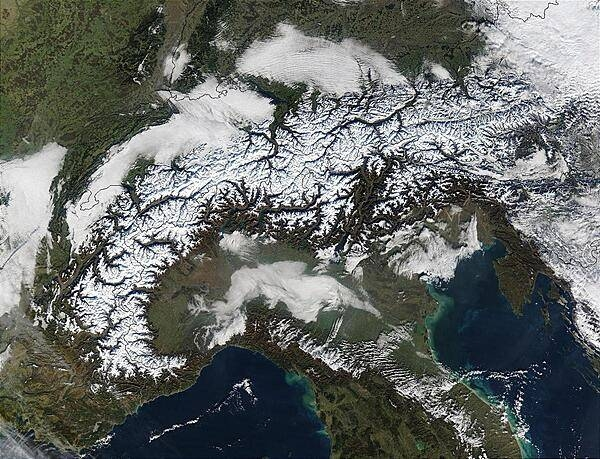
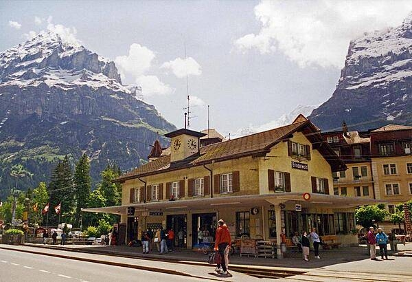

Map of Switzerland

Map of Switzerland
Location
Switzerland is nestled away in Western Europe.
It is bordered to the north by Germany, the west by France, the east by Austria, and the south by Italy.
Switzerland has a total area of 41,277km. That is composed of 39,997km of land and 1,280km of water.
Climate
The climate in Switzerland is temperate, though it varies with altitude. They experience cold and cloudy winters and warm and humid summers with occasional showers.
Switzerland contains a portion of the Alps in the south, in which the highest point is located at 4,634 meters above sea level.
Central Switzerland consists of mainly rolling hills, plains, and lakes.
Military and Security
Switzerland as seen from space.
Military Expenditures 2016-2020
| Year | Expenditure as % of GDP |
| 2016 | 0.7% |
| 2017 | 0.7% |
| 2018 | 0.7% |
| 2019 | 0.7% |
| 2020 | 0.8% |
Miliary Personnel
Switzerland's Military is not necessarily known for their strength. In most conflicts Switzerland chooses neutrality because their geographty is in a disadvantaged location.
The Swiss Armed Forces keeps a total of 4,000 active personnel, 20,000 conscripts, and 120,000 reserve forces.
Military Equipment
The swiss army uses a mix of domestic and imported weapons to arm their military. They are known for their domestically produced range of land vehicles.
The U.S. is Switzerland's #1 importer of weapons, a position held since 2010.
If you want to learn more about the Swiss military click on the link below!
Official Swiss Military WebsiteEconomy
Swiss Town
An economic center in Switzerland
Key Swiss Industries
A few of the key Swiss industries that contribute to their GDP are, in no particular order:
- Machinery
- Chemicals
- Watches
- Textiles
- Precision Instruments
- Tourism
- Banking
- Insurance
- Pharmaceuticals
On average, each year Switzerland sees around 3.4% growth in their Industrial Production.
Exports & Imports
| Year | Total Value Exported |
| 2017 | $430.129 billion |
| 2018 | $444.605 billion |
| 2019 | $443.997 billion |
| Year | Total Value Imported |
| 2017 | $343.367 billion |
| 2018 | $344.557 billion |
| 2019 | $344.477 billion |
Currency
The national currency of Switzerland is the Swiss Franc (CHF). The following is the conversion rate to the US Dollar:
| Year | Exchange Rate |
| 2013 | 0.9152 |
| 2014 | 0.9627 |
| 2018 | 0.99195 |
| 2019 | 0.98835 |
| 2020 | 0.88995 |
If you would like to invest in the Swiss Franc you can read more if you click the link below
Invest in the Swiss Franc!An aerial view of the capital city of Zurich.
Plan a trip to Zurich today!